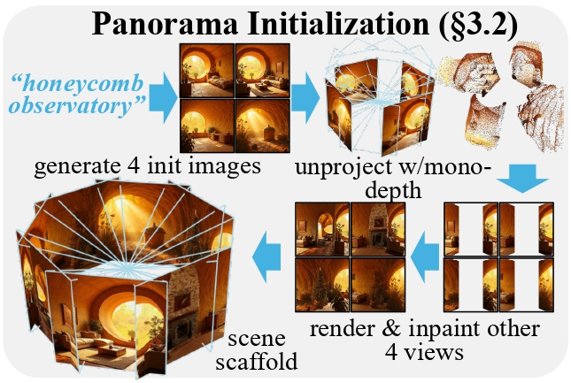
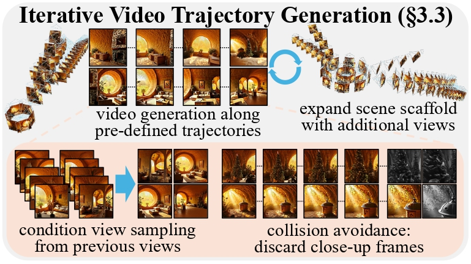
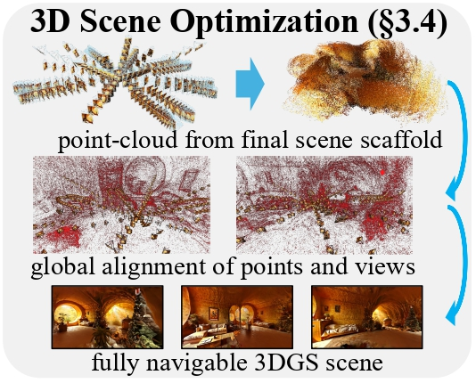
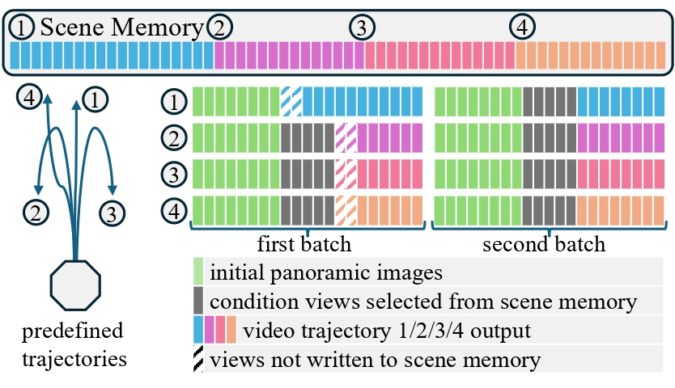

Generating 3D worlds from text is a highly anticipated goal in computer vision. Existing works are limited by the degree of exploration they allow inside of a scene, i.e., produce streched-out and noisy artifacts when moving beyond central or panoramic perspectives. To this end, we propose WorldExplorer, a novel method based on autoregressive video trajectory generation, which builds fully navigable 3D scenes with consistent visual quality across a wide range of viewpoints. We initialize our scenes by creating multi-view consistent images corresponding to a 360 degree panorama. Then, we expand it by leveraging video diffusion models in an iterative scene generation pipeline. Concretely, we generate multiple videos along short, pre-defined trajectories, that explore the scene in depth, including motion around objects. Our novel scene memory conditions each video on the most relevant prior views, while a collision-detection mechanism prevents degenerate results, like moving into objects. Finally, we fuse all generated views into a unified 3D representation via 3D Gaussian Splatting optimization. Compared to prior approaches, WorldExplorer produces high-quality scenes that remain stable under large camera motion, enabling for the first time realistic and unrestricted exploration. We believe this marks a significant step toward generating immersive and truly explorable virtual 3D environments.
We generate a fully navigable 3D scene from text input in three stages.
First, we create four initial images with a T2I model, and we define that they look outwards, distributed uniformly around the scene center (without overlap). We leverage monocular depth estimators and inpainting to create the remaining four images of our scene scaffold.

Next, we propose a novel iterative video trajectory generation pipeline. It exploits camera-guided video diffusion models to generate additional images of the scene along pre-defined trajectories. For each video generation, we select optimal conditioning views from all previously generated frames, which encourages 3D-consistent content generation. We further discard frames (marked as grey), that are too close to (running into) objects to avoid degenerate outputs. We repeat this trajectory generation multiple times to obtain a final set of posed images.

Finally, we optimize a 3D Gaussian-Splatting scene from our generated images. To this end, we first obtain a point-cloud initialization using VGGT. Then we globally align the predicted points with our camera poses using rigid transformations. Finally, we can explore the scene, i.e., synthesize novel views from perspectives beyond the scene center, in real-time using standard computer graphics rasterization.

We generate videos in multiple batches of 21 frames along 4 trajectories (blue, purple, red, orange). These trajectories start from each of our initial panoramic images (bottom left). To ensure 3D-consistent outputs, we prefill the first 8 frames with our initial scene scaffold (marked in green). The remaining 5 are sampled based on rotational similarity from our scene memory, which stores the images and poses of all previously generated frames (top). After each trajectory is generated, we append all frames starting from the third image to our scene memory for conditioning of later frames.
